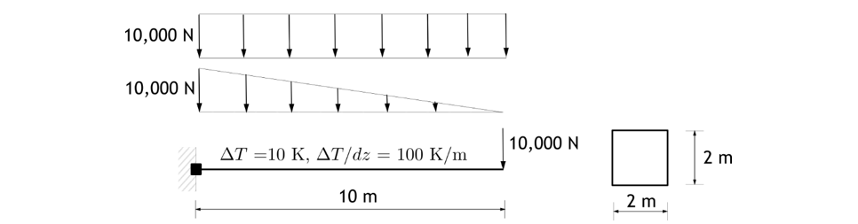
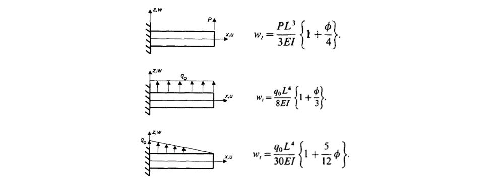
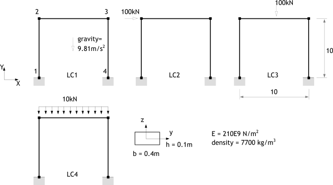
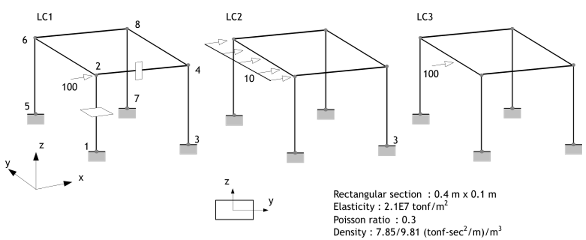
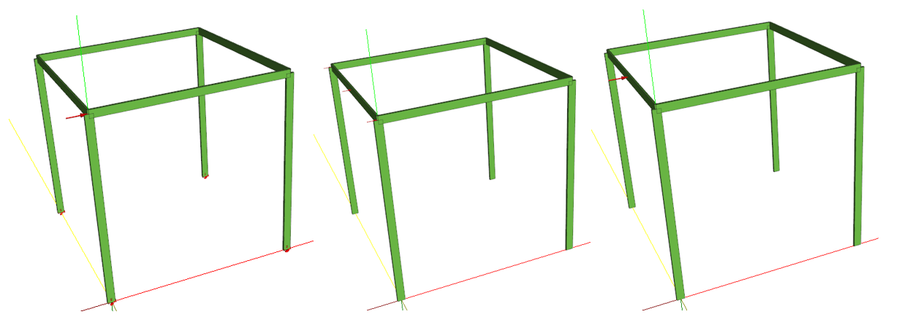
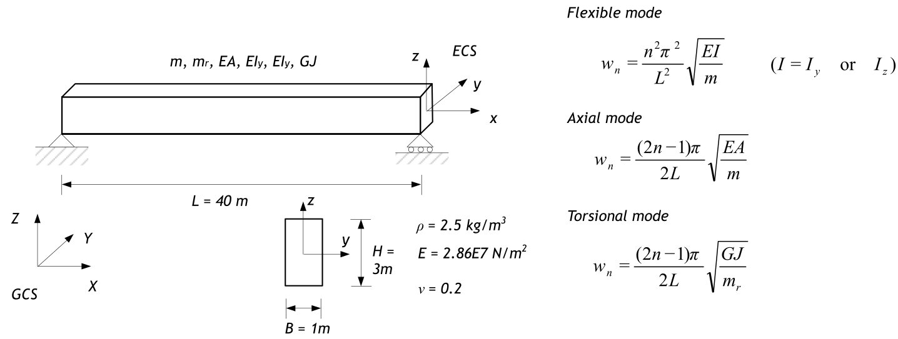
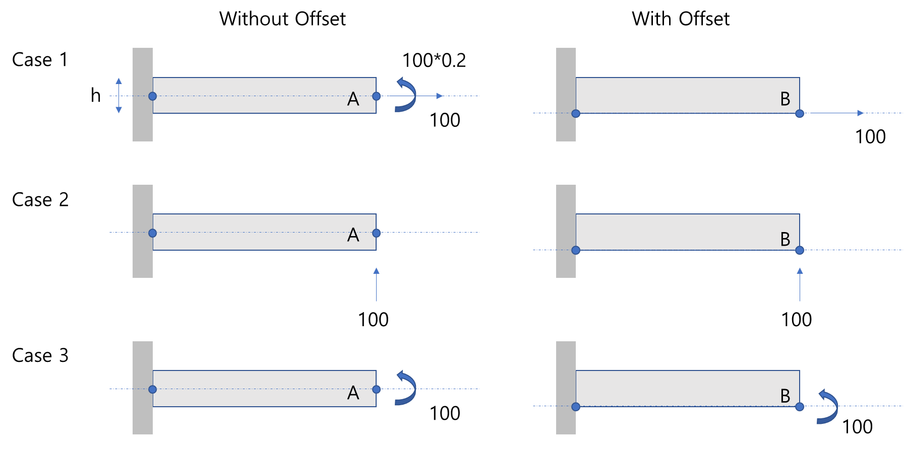
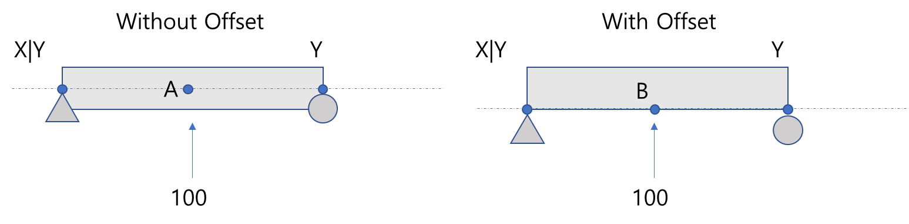

E.1 Beam Element
E.1.1 Cantilever
Hyfeast에서 제공하는 B2D2H, B2D2MH, B3D2H, B3D2MH 요소를 검증하기 위해 그림과 같은 캔틸레버보를 대상으로 끝단하중, 등분포하중, 삼각분포하중, 온도하중을 가력한 경우에 대해 그 결과를 검증하였다. 또한 경계조건을 단순지지로 변경하여 고유진동수를 검토하였다. 재료는 강재로 탄성계수 200 GPa, 포아송비 0.3, 밀도 7800 kg/m³이고, 부재를 1개 또는 4개로 이산화하고 그 결과를 비교하였다.

Figure E.1.1 Analysis Model

Figure E.1.2 Analytic solution (Friedman and Kosmatka (1993))
끝단하중, 등분포하중, 삼각분포하중에 대한 해는 Figure E.1.1에 제시되어 있다. Bernoulli 보로 계수 \(\small \phi\)가 0 이고, Timoshenko 보이면 다음과 같다.
단면전단계수는 사각형인 경우 1/1.2=0.83333이 보통 사용되나 포아송비를 고려할 경우 다음과 같다(Friedman and Kosmatka (1993)).
Table E.1.1 Analysis Results under Different Load Conditions
| Load | Analytic solution | Analysis Results in Hyfeast | |||||
|---|---|---|---|---|---|---|---|
| Bernoulli | Timoshenko | 1 element | 4 elements | ||||
| Conventional k | Exact k | Bernoulli | Timoshenko | Bernoulli | Timoshenko | ||
| Tip Load | 1.25E-05 | 1.29E-05 | 1.29E-05 | 1.2500E-05 | 1.2890E-05 | 1.2500E-05 | 1.2890E-05 |
| Uniform Load | 4.69E-05 | 4.88E-05 | 4.88E-05 | 4.6875E-05 | 4.8825E-05 | 4.6875E-05 | 4.8825E-05 |
| Triangular Load | 1.25E-05 | 1.32E-05 | 1.31E-05 | 1.2153E-05 | 1.2803E-05 | 1.2499E-05 | 1.3149E-05 |
온도하중을 가력한 결과는 요소 정식화와 무관하게 축방향 0.001, 수직방향 0.05가 계산된다.
단순보를 대상으로 Bernoulli 보와 Timoshenko 보의 고유진동수를 비교하였다. 전단변형을 고려한 Timoshenko 보에 대해서는 Friedman and Kosmatka (1993)에 제시된 해와 비교한다.
Table E.1.2 Analysis Results (Natural Frequencies)
| Mode | Analytic solution | 4 Timoshenko elements in F&K (1993). Ratio to analytic solution |
4 Bernoulli elements | 4 Timoshenko elements in Hyfeast | |||
|---|---|---|---|---|---|---|---|
| Bernoulli (Hz) | Timoshenko (Hz) | Frequency (Hz) | Ratio to analytic solution | Frequency (Hz) | Ratio to analytic solution | ||
| 1 | 45.9226505 | 43.1856605 | 1.0024 | 45.1971 | 0.984201 | 43.2589 | 1.001695921 |
| 2 | 183.690602 | 150.038484 | 1.0281 | 173.358 | 0.94375 | 153.927 | 1.025916793 |
| 3 | 413.303855 | 287.080857 | 1.0952 | 369.538 | 0.894107 | 313.461 | 1.091890985 |
| 4 | 734.762408 | 436.127412 | 1.5101 | 658.597 | 0.89634 | 658.597 | 1.510102282 |
| 5 | 1148.06626 | 589.449365 | 1.4682 | 955.606 | 0.832361 | 863.391 | 1.46474159 |
| 6 | 1653.21542 | 743.859685 | 1.2714 | 1364.58 | 0.82541 | 934.81 | 1.256702062 |
Input File
- E1.inp: B2D2H, B2D2MH, B3D2H, B3D2MH 요소를 각각 1개 사용한 입력
- E4.inp : B2D2H, B2D2MH, B3D2H, B3D2MH 요소를 각각 4개 사용한 입력
E.1.2 Portal Frame
그림과 같은 portal frame과 3가지 하중조건을 대상으로 5가지의 해석을 수행하였다. CASE 4와 CASE 5는 동일한 하중 LC4를 BeamDistributedLoad와 BeamTractionLoad로 각각 해석한 것이다. CASE 6는 단계별 해석을 검토하기 위해 CASE 1 수행된 후(자중해석) 그 상태를 유지하면서 LC1의 하중을 가력한 것이다. 현 시스템은 선형이므로 Case 6의 해는 Case 1와 Case 2의 결과를 중첩한 것과 동일하다. 해석에 도입된 요소는 B2D2H, B3D2H이고, 단면물성치로 Rectangle 또는 Mesh를 단면셀로 사용하였다. 전단변형은 모두 무시되었다.

Figure E.1.3 Analysis Model
Table E.1.4 Load Cases
| Load case | Load condtions | Remark |
|---|---|---|
| Case 1 | Self-Weight(LC1) | |
| Case 2 | Nodal Loads(LC2) | |
| Case 3 | Concentric Load within Element(LC3) | |
| Case 4 | Distributed Load within Element (LC4) | *Load, TYPE= BeamDistributed |
| Case 5 | Distributed Load within Element (LC4) | *Load, TYPE=BeamTraction |
| Case 6 | LC 1 → LC 2 | Step-by-Step Analysis |
| Case 7 | Frequency Analysis |
Table E.1.5 Analyss Result (Case 1)
| Result Type | Node | DOF | Remark | ||
|---|---|---|---|---|---|
| X | Y | RZ | |||
| Displacement (m) | 2 | 1.49815E-6 | -3.597E-5 | -0.000374837 | |
| 3 | 1.49815E-6 | -3.597E-5 | 0.000374837 | ||
| Reaction (N) | 1 | 2516.89 | 45322.2 | -8386.29 | |
| 4 | -2516.89 | 45322.2 | 8386.29 | ||
Table E.1.6 Analyss Result (Case 2
| Result Type | Node | DOF | Remark | ||
|---|---|---|---|---|---|
| X | Y | RZ | |||
| Displacement (m) | 2 | 0.0532197 | 5.09971E-5 | -0.00320049 | |
| 3 | 0.0531602 | -5.09971E-5 | -0.00319454 | ||
| Reaction (N) | 1 | -50020 | -42837.6 | 285945 | |
| 4 | -49980 | 42837.6 | 285679 | ||
Table E.1.7 Analyss Result (Case 3)
| Result Type | Node | DOF | Remark | ||
|---|---|---|---|---|---|
| X | Y | RZ | |||
| Displacement (m) | 2 | 7.4375E-06 | -5.95238E-5 | -0.00186086 | |
| 3 | -7.4375E-06 | -5.95238E-5 | 0.00186086 | ||
| Reaction (N) | 1 | 12495 | 50000 | -41633.3 | |
| 4 | -12495 | 50000 | 41633.3 | ||
Table E.1.8 Analyss Result (Case 4 and Case 5)
| Result Type | Node | DOF | Remark | ||
|---|---|---|---|---|---|
| X | Y | RZ | |||
| Displacement(m) | 2 | 4.95833E-6 | -5.95238E-5 | -0.00124058 | |
| 3 | -4.95833E-6 | -5.95238E-5 | 0.00124058 | ||
| Reaction(N) | 1 | 8330 | 50000 | -27755.6 | |
| 4 | -8330 | 50000 | 27755.6 | ||
Table E.1.9 Analyss Result (Case 6)
| Result Type | Node | DOF | Remark | ||
|---|---|---|---|---|---|
| X | Y | RZ | |||
| Displacement(m) | 2 | 0.0532212 | 1.50271E-5 | -0.00357533 | |
| 3 | 0.0531587 | -8.69671E-5 | -0.00281971 | ||
| Reaction(N) | 1 | -47503.1 | 2484.64 | 277559 | |
| 4 | -52496.9 | 88159.8 | 294065 | ||
Table E.1.10 Analyss Result (Case 7) – Natural Frequencies
| Mode 1 | Mode 2 | Mode 3 | Mode 4 | Remark |
|---|---|---|---|---|
| 2.78045Hz | 83.116Hz | 83.1692Hz | 117.567Hz |
Input File
-
portalEB2.inp : : B2D2H + Rectangular Cell
-
portalEB3.inp : : B3D2H + Rectangular Cell
-
portalDB2.inp : B2D2H + Meshed Cell
-
portalDB3.inp : B3D2H + Meshed Cell
E.1.3 Space Frame
3차원 보요소(B3D2H와 B3D2HM)와 보 요소하중을 검증한다. 그림과 같이 space frame에 3가지 하중조건이 부과된 경우에 대한 해와 고유진동수를 계산하였다.

Figure E.1.4 Analysis model

Figure E.1.5 Analysis model viewed in hfVisualzier
Table E.1.11 Analysis Result (Case 1)
| Result Type | Node | B3D2H | B3D2MH | ||||||||||
|---|---|---|---|---|---|---|---|---|---|---|---|---|---|
| X | Y | Z | RX | RY | RZ | X | Y | Z | RX | RY | RZ | ||
| Displacement | 2 | 0.514842 | -0.10838 | 0.000479 | 0.000592 | 0.030721 | 0.032236 | 0.517226 | -0.10887 | 0.000479 | 0.000598 | 0.030847 | 0.03238 |
| 4 | 0.514247 | 0.108377 | -0.00048 | -0.00059 | 0.030663 | 0.032198 | 0.516631 | 0.108865 | -0.00048 | -0.0006 | 0.030788 | 0.032342 | |
| 6 | 0.017355 | -0.10838 | 3.06E-05 | 0.000592 | 0.001284 | 0.032236 | 0.01751 | -0.10887 | 3.07E-05 | 0.000598 | 0.001294 | 0.032332 | |
| 8 | 0.017355 | 0.108377 | -3.1E-05 | -0.00059 | 0.001283 | 0.032198 | 0.01751 | 0.108865 | -3.1E-05 | -0.0006 | 0.001294 | 0.032342 | |
| Reaction | 1 | -48.5501 | 0.885508 | -40.2654 | -4.46897 | -277.158 | -2.925 | -48.5438 | 0.889093 | -40.2257 | -4.48729 | -277.268 | -2.93804 |
| 3 | -48.5096 | -0.88551 | 40.2654 | 4.46897 | -276.89 | -2.92152 | -48.5034 | -0.88909 | 40.2257 | 4.48729 | -277 | -2.93455 | |
| 5 | -1.4699 | 0.885508 | -2.57215 | -4.46897 | -8.78713 | -2.925 | -1.47609 | 0.889093 | -2.58131 | -4.48729 | -8.83017 | -2.93804 | |
| 7 | -1.47042 | -0.88551 | 2.57215 | 4.46897 | -8.78887 | -2.92152 | -1.47661 | -0.88909 | 2.58131 | 4.48729 | -8.8319 | -2.93455 | |
Table E.1.12 Analysis Result (Case 2)
| Result Type | Node | B3D2H | B3D2MH | ||||||||||
|---|---|---|---|---|---|---|---|---|---|---|---|---|---|
| X | Y | Z | RX | RY | RZ | X | Y | Z | RX | RY | RZ | ||
| Displacement | 2 | 0.266099 | 3.2E-05 | 0.000255 | -5E-07 | 0.016003 | -0.17642 | 0.267368 | 3.2E-05 | 0.000255 | -5E-07 | 0.016071 | -0.17644 |
| 4 | 0.265801 | -3.2E-05 | -0.00025 | 4.98E-07 | 0.015973 | 0.048355 | 0.26707 | -3.2E-05 | -0.00025 | 4.98E-07 | 0.016041 | 0.048342 | |
| 6 | 0.266099 | -3.2E-05 | 0.000255 | 4.98E-07 | 0.016003 | 0.176423 | 0.267368 | -3.2E-05 | 0.000255 | 4.98E-07 | 0.016071 | 0.176436 | |
| 8 | 0.265801 | 3.2E-05 | -0.00025 | -5E-07 | 0.015973 | -0.04835 | 0.26707 | 3.2E-05 | -0.00025 | -5E-07 | 0.016041 | -0.04834 | |
| Reaction | 1 | -25.01 | -0.00025 | -21.4188 | 0.001275 | -142.973 | 16.008 | -25.01 | -0.00025 | -21.4035 | 0.001274 | -143.049 | 16.0091 |
| 3 | -24.99 | 0.000248 | 21.4188 | -0.00127 | -142.839 | -4.38753 | -24.99 | 0.000248 | 21.4035 | -0.00127 | -142.916 | -4.38636 | |
| 5 | -25.01 | 0.000248 | -21.4188 | -0.00127 | -142.973 | -16.008 | -25.01 | 0.000248 | -21.4035 | -0.00127 | -142.916 | -16.0091 | |
| 7 | -24.99 | -0.00025 | 21.4188 | 0.001275 | -142.839 | 4.38753 | -24.99 | -0.00025 | 21.4035 | 0.001274 | -142.916 | 4.38636 | |
Table E.1.13 Analysis Result (Case 3)
| Result Type | Node | B3D2H | B3D2MH | ||||||||||
|---|---|---|---|---|---|---|---|---|---|---|---|---|---|
| X | Y | Z | RX | RY | RZ | X | Y | Z | RX | RY | RZ | ||
| Displacement | 2 | 0.266099 | 4.8E-05 | 0.000255 | -7.5E-07 | 0.016003 | -0.26464 | 0.267368 | 4.8E-05 | 0.000255 | -7.5E-07 | 0.016071 | -0.26465 |
| 4 | 0.265801 | -4.8E-05 | -0.00025 | 7.47E-07 | 0.015973 | 0.072532 | 0.26707 | -4.8E-05 | -0.00025 | 7.46E-07 | 0.016041 | 0.072513 | |
| 6 | 0.266099 | -4.8E-05 | 0.000255 | 7.47E-07 | 0.016003 | 0.264635 | 0.267368 | -4.8E-05 | 0.000255 | 7.46E-07 | 0.016041 | 0.264654 | |
| 8 | 0.265801 | 4.8E-05 | -0.00025 | -7.5E-07 | 0.015973 | -0.07253 | 0.26707 | 4.8E-05 | -0.00025 | -7.5E-07 | 0.016041 | -0.07251 | |
| Reaction | 1 | -25.01 | -0.00037 | -21.4188 | 0.001912 | -142.973 | 24.012 | -25.01 | -0.00037 | -21.4037 | 0.001912 | -143.049 | 24.0137 |
| 3 | -24.99 | 0.000372 | 21.4188 | -0.00191 | -142.839 | -6.5813 | -24.99 | 0.000372 | 21.4037 | -0.00191 | -142.916 | -6.57955 | |
| 5 | -25.01 | 0.000372 | -21.4188 | -0.00191 | -142.973 | -24.012 | -25.01 | 0.000372 | -21.4037 | -0.00191 | -142.916 | -24.0137 | |
| 7 | -24.99 | -0.00037 | 21.4188 | 0.001912 | -142.839 | 6.5813 | -24.99 | -0.00037 | 21.4037 | 0.001912 | -142.916 | 6.57955 | |
Table E.1.14 Analysis Result – Natural Frequencies
| Mode number | B3D2H | B3D2MH |
|---|---|---|
| 1 | 0.685552 | 0.685408 |
| 2 | 1.11262 | 1.11236 |
| 3 | 2.30255 | 2.29755 |
| 4 | 2.83181 | 2.82592 |
| 5 | 2.96413 | 2.96413 |
| 6 | 6.06135 | 6.06101 |
| 7 | 6.29894 | 6.29773 |
| 8 | 8.69497 | 8.69498 |
| 9 | 9.00954 | 9.00956 |
| 10 | 13.1401 | 13.1419 |
Input File
-
SpaceFrame.inp : B3D2H elements are used for the model
-
SpaceFrameS.inp : B3D2MH elements are used for the model
E.1.4 Effect of Mass Formulation on Beam Natural Frequencies
그림 E.1.6과 같이 단순 지지된 3차원 보요소의 고유진동수를 해석하여 이론해와 비교하였다. 단순지지된 보의 진동모드는 강축 및 약축에 대한 휨모드와 축방향 모드, 비틂 모드 등 총 4 종류의 진동모드가 존재한다. 그림에서 각각에 대한 이론해를 기술하였다. 질량행렬의 구성방식(consistent mass 또는 lumped mass)과 요소 개수을 1, 4, 10개로 변경하며 해석을 수행한 후 각 진동 모드에 대해 이론해와 비교하였다. Table E.1.15 - Table E.1.18는 각각의 진동모드에 대해 해석 결과를 비교한 것이다.

Figure E.1.6 Natural frequencies of simply supported beam
Table E.1.15 Natural Frequencies of Strong-Axis Bending Mode (Global XZ Plane, Local XY Plane)
| Mode | Analytic solution | 1 element | 4 elements | 10 elements | |||
|---|---|---|---|---|---|---|---|
| Consistent | Lumped | Consistent | Lumped | Consistent | Lumped | ||
| 1 | 2.8771071 | 3.18589 | 19.0415 | 2.87122 | 2.87623 | 2.87049 | 2.87709 |
| 2 | 11.508428 | 14.4918 | 11.4489 | 11.4429 | 11.4046 | 11.5071 | |
| 3 | 25.893964 | 23.321 | 21.2859 | 21.0141 | 21.1715 | 21.128 | |
| 4 | 46.033713 | 25.8331 | 24.2575 | 25.3847 | 25.8765 | ||
| 5 | 71.927677 | 49.2791 | 59.8432 | 44.4925 | 45.9199 | ||
| 6 | 103.57585 | 67.1494 | 89.5616 | 64.0379 | 62.8638 | ||
| 7 | 140.97825 | 76.8024 | 105.645 | 68.3648 | 71.4055 | ||
| 8 | 184.13485 | 118.392 | 96.6521 | 101.654 | |||
| 9 | 233.04567 | 121.979 | 108.483 | 103.052 | |||
| 10 | 287.71071 | 171.617 | 129.065 | 134.924 | |||
Table E.1.16 Natural Frequencies of Weak-Axis Bending Mode (Global XY Plane, Local XZ Plane)
| Mode | Analytic solution | 1 element | 4 elements | 10 elements | |||
|---|---|---|---|---|---|---|---|
| Consistent | Lumped | Consistent | Lumped | Consistent | Lumped | ||
| 1 | 0.9590357 | 1.06417 | 19.0415 | 0.959038 | 0.958743 | 0.958796 | 0.959029 |
| 2 | 3.8361428 | 4.8726 | 3.84733 | 3.8083 | 3.83262 | 3.83569 | |
| 3 | 8.6313212 | 23.321 | 8.76871 | 8.08584 | 8.61603 | 8.62552 | |
| 4 | 15.344571 | 16.9607 | 21.0141 | 15.3072 | 15.3066 | ||
| 5 | 23.975892 | 21.2859 | 21.1715 | 21.128 | |||
| 6 | 34.525285 | 26.8951 | 23.9173 | 23.8018 | |||
| 7 | 46.992749 | 42.3952 | 34.4816 | 33.8845 | |||
| 8 | 61.378284 | 63.2384 | 47.0686 | 44.9746 | |||
| 9 | 77.681891 | 67.1494 | 61.7799 | 55.7976 | |||
| 10 | 95.903569 | 76.7159 | 64.0379 | 62.8638 | |||
Table E.1.17 Natural Frequencies of Axial Deformation Mode
| Mode | Analytic solution | 1 element | 4 elements | 10 elements | |||
|---|---|---|---|---|---|---|---|
| Consistent | Lumped | Consistent | Lumped | Consistent | Lumped | ||
| 1 | 21.149764 | 23.321 | 19.0415 | 21.2859 | 21.0141 | 21.1715 | 21.128 |
| 2 | 63.449291 | 67.1494 | 59.8432 | 64.0379 | 62.8638 | ||
| 3 | 105.77482 | 121.979 | 89.5616 | 108.483 | 103.052 | ||
| 4 | 148.04835 | 176.392 | 105.645 | 155.57 | 140.702 | ||
| 5 | 190.34787 | 206.278 | 174.888 | ||||
| 6 | 232.6474 | 261.212 | 204.768 | ||||
| 7 | 274.94693 | 319.842 | 229.605 | ||||
| 8 | 317.24645 | 378.975 | 248.789 | ||||
| 9 | 359.54598 | 430.669 | 261.847 | ||||
| 10 | 401.84551 | 462.145 | 268.457 | ||||
Table E.1.18 Natural Frequencies of Torsional Mode
| Mode | Analytic solution | 1 element | 4 elements | 10 elements | |||
|---|---|---|---|---|---|---|---|
| Consistent | Lumped | Consistent | Lumped | Consistent | Lumped | ||
| 1 | 7.6754318 | 8.4634 | 6.91034 | 7.72487 | 7.62623 | 7.68335 | 7.66757 |
| 2 | 23.026295 | 24.3692 | 21.7177 | 23.24 | 22.8139 | ||
| 3 | 38.377159 | 44.2674 | 32.5028 | 39.3697 | 37.3985 | ||
| 4 | 53.728022 | 64.0145 | 38.3397 | 56.4578 | 51.0622 | ||
| 5 | 69.078886 | 74.8603 | 63.4686 | ||||
| 6 | 84.429749 | 94.7963 | 74.3122 | ||||
| 7 | 99.780613 | 116.074 | 83.3259 | ||||
| 8 | 115.13148 | 137.534 | 90.288 | ||||
| 9 | 130.48234 | 156.294 | 95.0268 | ||||
| 10 | 145.8332 | 167.717 | 97.4257 | ||||
□ Remark : Derivation of natural frequency
외력이 없는 상태에서 단순지지된 보에 대한 휨, 축변형, 비틂 에 대한 지배방정식 및 경계조건은 각각 다음과 같다.
- 휨 모드
- 축변형 모드
- 비틂 모드
위에서 \(\small m\)은 단위길이당 질량(\(\small m = \rho A\))이고, \(\small m_{r}\)은 단위길이당 회전질량(\(\small m_{r} = \rho I_{p}\) ; \(\small I_{p}\)는 극관성모멘트(polar moment of inertia), \(\small I_{p} = I_{x} + I_{y}\))이다. \(\small u(x,t) = \phi(x)q(t)\) 형태의 변수분리를 적용하고, 경계조건을 부과하면 다음과 같이 각각의 고유진동수 및 고유진동 모드를 유도할 수 있다;
- 휨 모드
- 축변형 모드
- 비틂 모드
Input file
-
frqbeam1c.inp : 1 element, consistent mass
-
frqbeam4c.inp : 4 elements, consistent mass
-
frqbeam10c.inp : 10 elements, consistent mass
-
frqbeam1l.inp : 1 element, lumped mass
-
frqbeam4l.inp : 4 elements, lumped mass
-
frqbeam10l.inp : 10 elements, lumped mass
E.1.5 Offset of Beam
Figure E.1.7과 같이 캔틸레버를 대상으로 도심에 절점을 두어 모델링한 경우와 단면 하단부를 중심으로 오프셋을 주어 모델링 경우를 비교한다. 하중조건은 3건이고 길이 L=10m이고, 0.1m*0.4m의 직사각 단면을 적용하였다. 그림에서 두 모델을 비교할 때 A점, B점은 다음의 관계를 만족해야 한다.

Figure E.1.7 Cantilever with or without offset
요소개수와 무관하게 \(\small u_{A} = 0.00119048\), \(\small v_{A} = 0.0892857\), \(\small \theta_{A} = 0.0178571\), \(\small u_{B} = 0.0047619\), \(\small v_{B} = 0.0892857\), \(\small \theta_{B} = 0.0178571\)이다. 이 값은 위 수식을 만족한다.
Input file
-
Offset-cant1c.inp : 1 element, without offset
-
Offset-cant1b.inp : 1 element, with offset
-
Offset-cant2c.inp : 2 elements, without offset
-
Offset-cant2b.inp : 2 elements, with offset
-
Offset-cant10c.inp : 10 elements, without offset
-
Offset-cant10b.inp : 10 elements, with offset
Figure E.1.7과 같은 단순보 조건에서는 E.1.9와 달리 \(\small v_{A} = v_{B}\), \(\small \theta_{A} = \theta_{B}\)이지만 축방향 변위에 대한 조건식은 만족하지 않는다. 요소 개수에 무관하게 \(\small v_{A} = v_{B} = 0.186012\), \(\small \theta_{A} = \theta_{B} = 0\) 이 계산된다.

Figure E.1.8 Simply suppoted beam with or without offset
Input file
-
Offset-B2D2H-simple2c.inp : 2 B2D2H element, without offset
-
Offset-B2D2H-simple2b.inp : 2 B2D2H element, with offset
-
Offset-B2D2H-simple10c.inp : 10 B2D2H element, with offset
-
Offset-B2D2H-simple10b.inp : 10 B2D2H element, with offset
-
Offset-B3D2H-simple2c.inp : 2 B3D2H element, without offset
-
Offset-B3D2H-simple2b.inp : 2 B3D2H element, with offset
-
Offset-B3D2H-simple10c.inp : 10 B3D2H element, without offset
-
Offset-B3D2H-simple10b.inp : 10 B3D2H element, with offset
References
- Friedman, Z., & Kosmatka, J. B. (1993). An improved two-node Timoshenko beam finite element. Computers & structures, 47(3), 473-481.